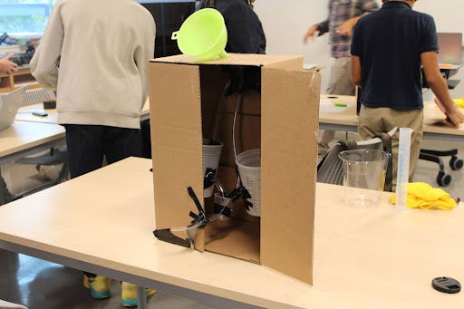
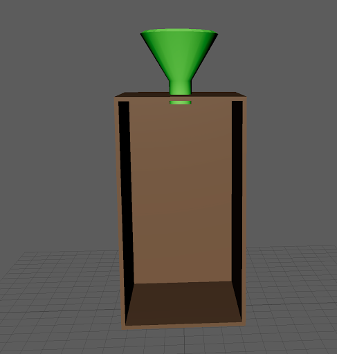
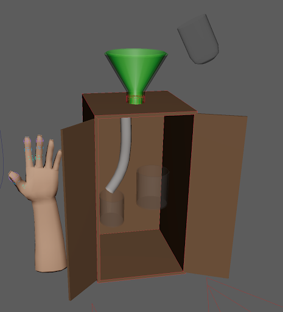
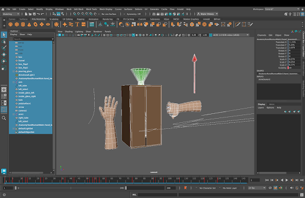
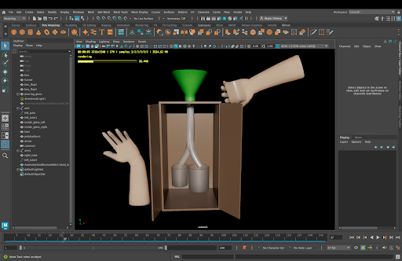
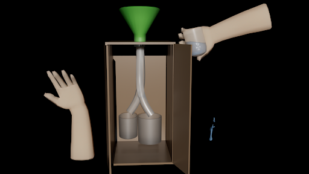

In our New Media class, we were challenged with making a black box, which is a large trunk with a funnel and tubes and when you put water in it, the output of water is unexpected.
We made the mystery black box physically and then we recreated it in Maya, a 3D modeling software. Inside my black box there are wishbone-shaped tubes that lead to two different catching cups. A black box is a box with a funnel, tubes, and sometimes supports. There's also a catching cup, and sometimes more than one cup. You pour the water into the funnel and it goes down the tubes in a mysterious way. Sometimes one cup might have more than the other, and sometimes they might be equal.
Before our boxes, there was an original box made by our teacher, so that's where we got the idea from. There were many trials recorded to show the unpredictability of the water. For example, in Trial 26 we put 1000 mL of water in the box and only 300 mL came out of the box.
Our teacher soon instructed us to build our own boxes and the materials we used were the following;
After gathering all the materials, we built our boxes and tested them.

An example of one of the boxes we physically made.
After we built our boxes physically, we remade them in Maya; A 3D modeling software used by professionals such as game developers and Disney. We first made the box, the box flaps, then the funnel. After that, we made the pouring glass and containers for the box, then we rigged a hand to wave. After that was done, we created our lighting and tubes, then we rigged a second hand to grab the pouring glass, and finally, we added the liquid and rendered our final product.

The box in a very early stage.

The box in a mid stage

Our box in a late stage

The box in a almost finished stage

The finished product of the box
Right here is the video of how the box works